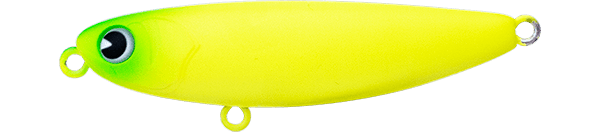
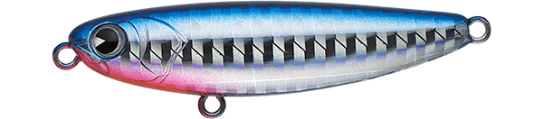
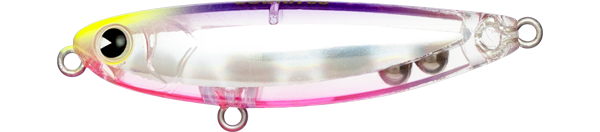
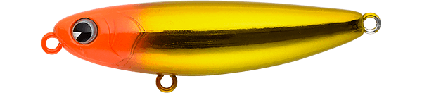

プガチョフコブラ60
（PUGACHEV'S COBRA 60）
プガチョフコブラ60（PUGACHEV'S COBRA 60）はima（アイマ）のトップウォーター（ペンシルベイト）です。
シーバス用の名作「プガチョフコブラ」を、クロダイ用トップウォーターとして全面改修したモデル。6gの軽量ボディながら驚くほどの飛距離を出し、警戒心の強いクロダイをロングレンジから狙えます。吸い込みやすい浮き姿勢と控えめアクションで、ミスバイトを抑えられるのも特徴です。

画像出典:ima公式HP
スペック
- メーカー
- ima（アイマ）
- タイプ
- トップウォーター（ペンシルベイト）
- 全長
- 60mm
- 自重
- 6g
- フック
- #10
- リング
- #2
- アクション
- ドッグウォーク＆ダイブ
- ターゲット
- クロダイ
- 価格
- 1,870円（税込）
- 発売
- 2013年4月
▼今すぐチェック

プガチョフコブラ60の特徴
「飛ぶ・掛かる・操作しやすい」の3つでクロダイのトップゲームを支える60mm
-
シンプルなボディ形状で驚きの飛距離
6gと軽量ながら、シンプルなボディ形状で驚くほどの飛距離を実現。警戒心の強いクロダイに、離れた位置からアプローチできる。
-
ミスバイトを抑える控えめアクション
アクションをあえて控えめにすることで、ルアーを追ってきたクロダイがミスバイトしにくい設計。食い損ねが多いトップゲームの悩みを減らしてくれる。
-
吸い込みやすい浮き姿勢＆ミニボディ
吸い込みやすい浮き姿勢と60mmのミニボディで、クロダイがルアーを口に入れやすい。アクションのレスポンスも良く、軽快にキビキビと操作できる。
プガチョフコブラ60の使い方
基本はロッドを小刻みに動かしてのドッグウォーク。レスポンスが良いので、軽い入力でもキビキビと首を振ってくれます。
ときどき強めに入力してダイブさせ、水面直下に一瞬潜らせて変化を付けるのも有効。クロダイが追ってきているのに食わないときは、アクションを止めすぎずに一定のリズムで動かし続けると、吸い込みやすい浮き姿勢が活きて口を使わせやすくなります。
プガチョフコブラ60の得意な状況
港湾・干潟・河口・河川など、クロダイが水面を意識しているシャローエリア全般が出番。
特に、警戒心が強くて近づくと逃げてしまうクロダイを、ロングキャストで離れた位置から狙いたい状況で強い1本です。
ワンポイント
バイトがあってもすぐに合わせず、ロッドに重みが乗ってから巻き合わせするのがコツです。控えめアクションと吸い込みやすい浮き姿勢を活かすには、ルアーをしっかり吸い込ませる「間」が大切です。
ドッグウォークの幅を小さく保つと、ルアーが前に進みすぎず、同じ場所で長く誘えます。
プガチョフコブラシリーズの使い分け
| モデル | 全長／自重 | 得意な場面 |
|---|---|---|
| プガチョフコブラ60 | 60mm／6g | クロダイ用。吸い込み重視の控えめアクションと飛距離（本記事のモデル） |
| プガチョフコブラ | 90mm／12g | シーバス用。浮力を抑えた吸い込み重視のスライディングアクション |
| プガチョフコブラ クルビット | 90mm／12g | 垂直浮きのチューニングモデル。タイトでクイックなドッグウォーク |
90mmのオリジナルモデルはシーバスのトップゲーム用、60はそれをクロダイ用に全面改修したモデルです。狙う魚とベイトのサイズで選び分けるとわかりやすいシリーズです。
人気カラー
プガチョフコブラ60は通常カラー12色に加え、特化企画カラーも展開。クロダイのトップゲームでオススメのカラーを厳選して紹介します。

マットチャート水面での視認性が高い定番チャート。

ブルーバックレッドギルブルーの背中にレッドのエラを入れたアピール系。

クリアースプラッシュクリア系で、澄み潮や日中のスレた魚に見せやすい。

OHゴールドゴールド系のフラッシングで濁りやローライトに。
画像出典:ima公式HP
プガチョフコブラ60に似ているルアー
-
 チュパゾー60
ブルーブルー
詳細はこちら＞
チュパゾー60
ブルーブルー
詳細はこちら＞
全長60mm・自重7gのチヌ用ペンシルベイト。同じ60mmクラスで、プガチョフコブラ60と並んでチヌトップの選択肢になる1本。
-
 シルバーウルフ ラフトリック90F
ダイワ
詳細はこちら＞
シルバーウルフ ラフトリック90F
ダイワ
詳細はこちら＞
全長90mm・自重13.5gのチニング専用ペンシル。風波で荒れた河口など、60mmでは水面で埋もれてしまう状況での持ち替えに。
-
 イネムン60
ブルーブルー
詳細はこちら＞
イネムン60
ブルーブルー
詳細はこちら＞
全長60mm・自重6gのクロダイ用トップウォータープラグ。サイズ・重さがほぼ同じで、ローテーションの1本として組み合わせやすい。